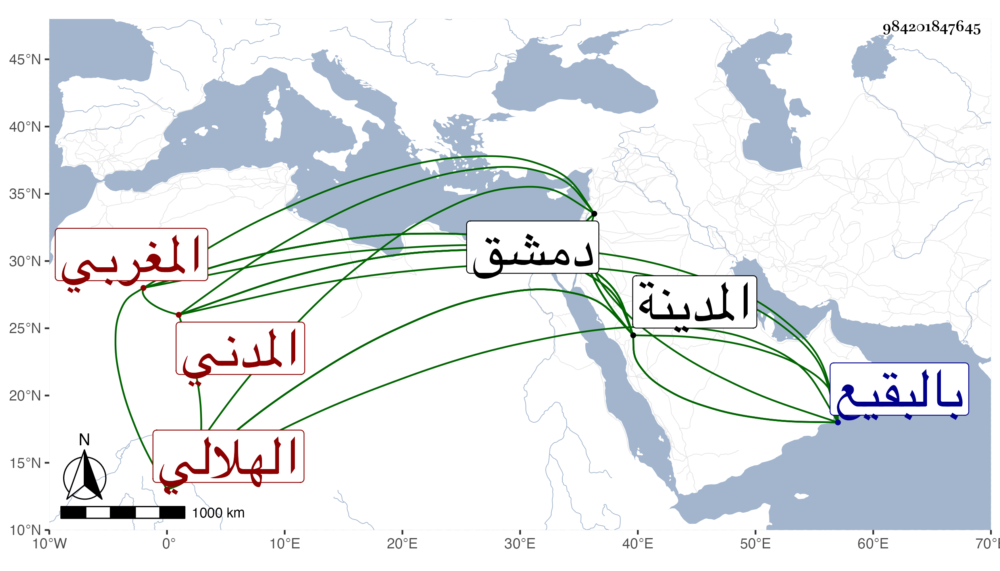

0902Sakhawi.DawLamic.ITO20230111-ara1.EIS1600.984201847645
Biography ID: 984201847645
983
سليمان بن أحمد بن عبد العزيز علم الدين أبو الربيع الهلالي المغربي الأصل المدني ويعرف بابن السقا . ولد بعد سنة عشرين وسبعمائة بقليل وحدده الشرف أبو الفتح المراغي فيما قرأته بخطه بست أو سبع وعشرين وسمع بدمشق من أبي الفرج بن عبد الهادي والشهاب أحمد بن علي الجزري وابن الخباز والتاج ابن أبي اليسر والشمس بن نباتة وأبي الخطاب السبتي وإبراهيم بن إسحق بن الكحال ومحمد بن أبي بكر بن أحمد بن عبد الدائم وداود بن إبراهيم بن العطار وفاطمة ابنة العز إبراهيم بن أبي عمر في آخرين ، وكان يباشر الصدقات بالمدينة فحمدت سيرته ثم أضر وانقطع ، وحدث سمع منه الفضلاء قرأ عليه جماعة من شيوخنا كشيخنا وذكره في معجمه وإنبائه وأبي الفتح المراغي وأكثر عنه وكذا سمع عليه المحب المطري ، ومات في أواخر سنة اثنتين بالمدينة ، ودفن بالبقيع وقد جاز الثمانين وقد أثنى عليه ابن فرحون في تاريخ المدينة فقال : علم الدين بن الشيخ شهاب الدين السقا رأس بين اخوانه قارىء خدوم للاخوان تولى نظر الربط والأوقاف من النخيل وغيرها فلم ير أحسن منه قياما بها من العفة والنصح وعمر ربطا كثيرة كانت قد أشرفت على الخراب وقل أن يشبهه أحد من أبناء جنسه في حسن طريقته أعانه الله . انتهى وهو في عقود المقريزي .
